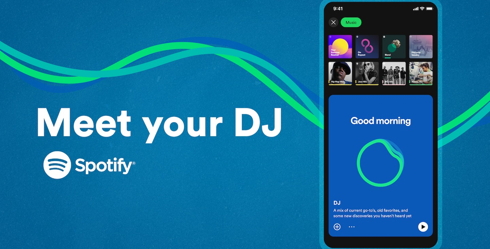

¿Qué es la Inteligencia Artificial?
La Inteligencia Artificial (IA) es un campo de la informática que se centra en la creación de sistemas capaces de realizar tareas que normalmente requieren inteligencia humana. Estas tareas incluyen el aprendizaje, la resolución de problemas, la percepción y la comprensión del lenguaje natural. La IA se divide en dos grandes categorías: IA débil, que está diseñada para realizar tareas específicas, y IA fuerte, que tiene la capacidad de realizar cualquier tarea cognitiva que un ser humano pueda realizar.

Ventajas y Desventajas
Ventajas de la IA
1. Automatización de Tareas Repetitivas.
2. Mejora de la Toma de Decisiones.
3. Personalización.
Desventajas
1. Problemas de Privacidad.
2. Desigualdad Económica.
3. Desplazamiento Laboral.

Tipos de Inteligencia Artificial
Ejemplo Aplicativo de IA
Un ejemplo notable de una aplicación de IA es Spotify, el cual emplea la inteligencia artificial para ofrecer una experiencia de usuario personalizada y atractiva, optimizando tanto la recomendación de música como la interacción con la plataforma. La IA no solo mejora la precisión de las recomendaciones, sino que también permite a Spotify ofrecer características innovadoras que enriquecen la experiencia del usuario.
Conclusiones
La inteligencia artificial tiene el potencial de transformar significativamente diversos aspectos de nuestra vida y trabajo, ofreciendo oportunidades para la innovación y la mejora en la eficiencia. Sin embargo, es esencial abordar los desafíos y riesgos asociados con su implementación para garantizar que sus beneficios sean equitativos y sostenibles. La clave está en equilibrar el avance tecnológico con la ética y la responsabilidad social, y en preparar a la sociedad para adaptarse a un futuro cada vez más influenciado por la IA.¿Cuándo usar IA?
- En las tareas que Requieren Juicio Humano y Empatía Ejemplo: Terapia psicológica, asesoramiento personalizado en situaciones complejas y resolución de conflictos interpersonales..
- Para automatizar tareas repetitivas y peligrosas.
- En industrias como la manufactura, la logística y la energía, la IA puede ayudar a optimizar procesos para mejorar la eficiencia y reducir costos.
- En aplicaciones que requieren personalización y aprendizaje continuo.

¿Cuándo no usar IA?
- Cuando los riesgos de privacidad y seguridad superen los beneficios.
- En situaciones donde el juicio humano y la empatía son cruciales.
- En entornos donde el uso de IA puede llevar al desplazamiento significativo de trabajadores sin ofrecer alternativas adecuadas, es importante considerar las implicaciones sociales y económicas.
- Cuando la implementación de IA es demasiado costosa en comparación con los beneficios.